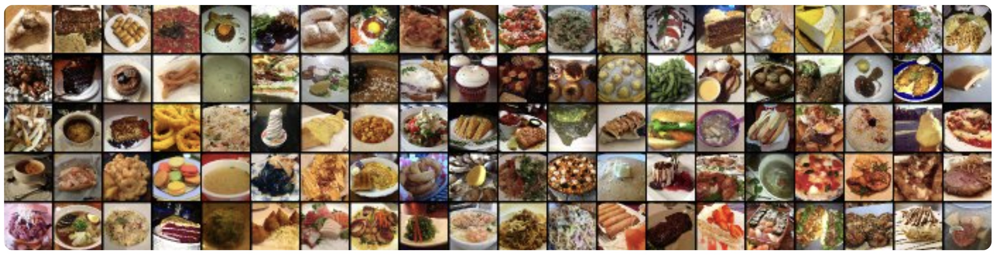

Project Goal:
This project fine tunes a Tiny Swin transformer to classify images from the Food101 dataset. This dataset consists of 101 food categories with 750 training and 250 test images per category, summing up to a total of 101,000 images. The training images are not cleaned, and thus still contain some amount of noise.
Key Literature:
- Swin Transformer: Hierarchical Vision Transformer using Shifted Windows, Microsoft Research Asia 2021
- - “To address these differences, we propose a hierarchical Transformer whose representation is computed with Shifted windows.”
- Food-101 – Mining Discriminative Components with Random Forests 2014
- - “We introduce a novel and challenging dataset of 101 food categories, with 101,000 images.”
Modeling Approach:
I fine-tuned Microsoft's pretrained Tiny Swin model using pytorch API. I used a Swin Transformer due to its ability to effectively capture both local and global features while maintaining computational efficiency. Unlike traditional CNNs, which use fixed receptive fields, Swin Transformers leverage a hierarchical architecture with shifted windows, allowing them to process images with greater flexibility and efficiency.
Results:
- Test Accuracy: 81.43%
- F1 score: 81%